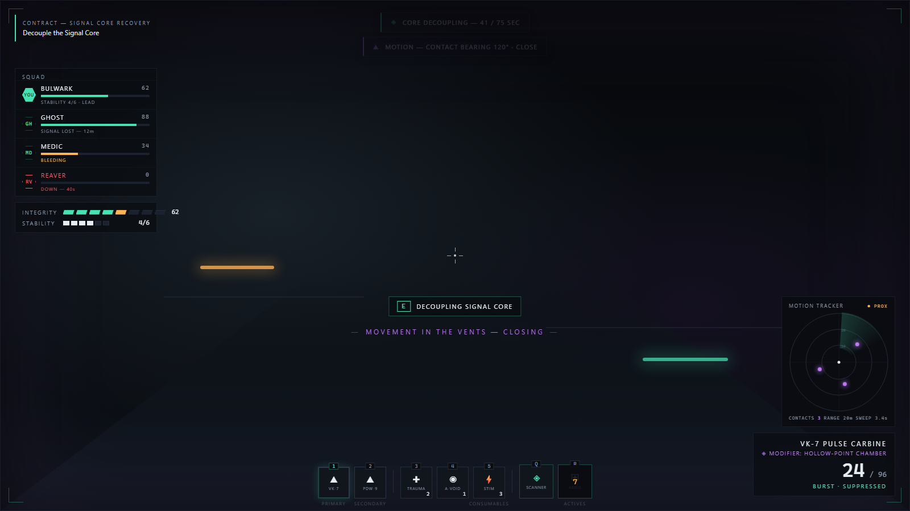
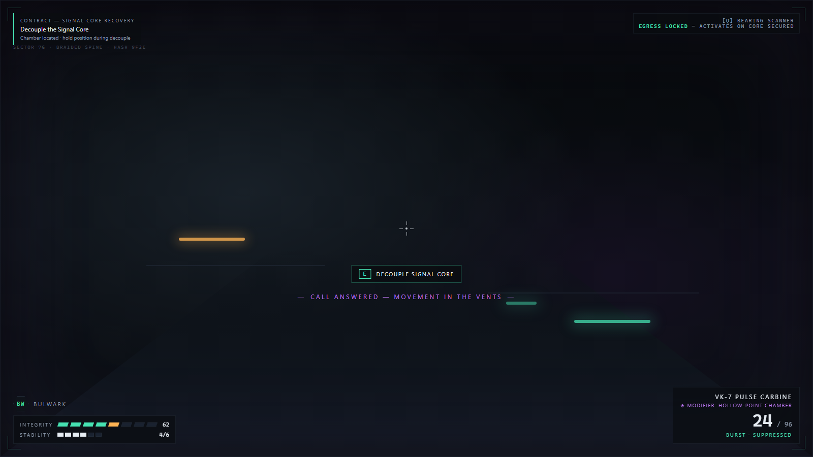
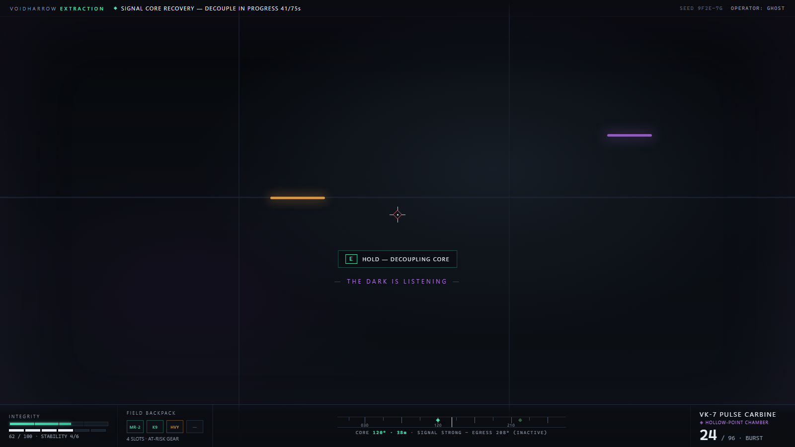
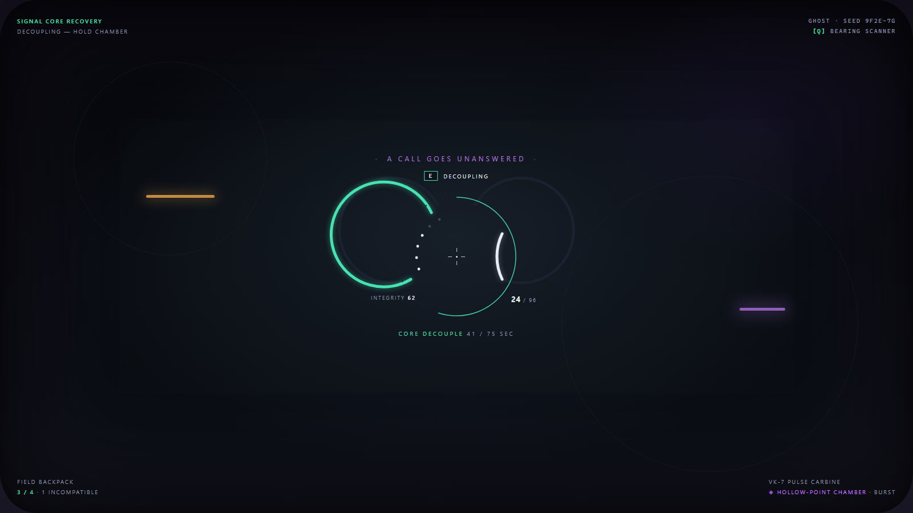
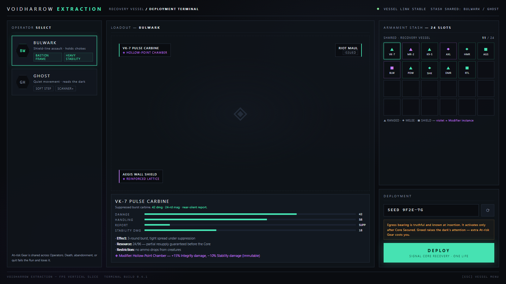

Concept mockups for the first-person redesign. All variants share the premium skin carried over from the original project and the game's light grammar. Per design contract: no minimap (Bearing Scanner instead), and Director pressure is communicated through the world — violet vignette pulse and call captions — never a HUD meter.
The picked Variant A foundation, revised: party frame with member HP on the left (above your own vitals), a circular Aliens-style motion tracker on the right above the weapon block, notifications top-centre, and a bottom-centre action bar — 1/2 primary & secondary weapons, 3–5 consumables, Q/R active abilities. The tracker gives fuzzy jittering blips in rough range bands and bearing only — no exact positions, stationary contacts fade — per the locked sensor design.

Integrity and Stability live as segmented pips in a bottom-left suit cluster; the weapon block sits bottom-right; a quiet objective chip anchors top-left. Nothing reads as a menu — pure panel, border and flex primitives that translate 1:1 to UI Toolkit USS.

A single rail spans the bottom edge: vitals, the 4-slot Field Backpack, a compass-tape bearing strip (the Bearing Scanner's passive read) and weapon — all snapped to one horizontal datum. The most tactical-terminal of the three; still pure USS flex rows and hairline borders.

The suit, not the game, tells you things: Integrity and Stability are curved arcs around the reticle, ammo is a mirrored arc, decouple progress is a ring. Everything else is corner whisper-text. Arcs render as vector Painter2D paths — texture-free and crisp at any DPI.

Operator select (Bulwark / Ghost), loadout with exact weapon numbers and the Modifier line, the shared 24-slot Armament Stash, seed entry and deploy. The warning strip teaches Greed-Danger and truthful-egress in-fiction.

{kind=link}
{kind=link}
{kind=link}
{kind=link}
{kind=link}